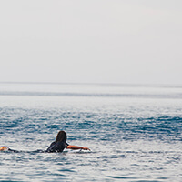

- I love hay bales. Took this snap on a drive through the countryside past some straw fields.
- The lake was so calm today. We had a great view of the snow on the mountains from here.

- hiked to the top of the mountain and got this picture of the canyon and trees below.
- It was amazing to see an iceberg up close, it was so cold but didn’t snow today.
- The red cliffs were beautiful. It was really hot in the desert but we did a lot of walking through the canyons.
- Fall is coming, I love when the leaves on the trees start to change color.
- plantation green
- summer vacation Oregon coast sandy dunes beach sea
- countryside lane stroll walk countryside path tree avenue forest
- sunset coast sky summer orange bright sea

- cave landscape river forest caving view
- bluebells walk meadow snow mountain fog flowers peak
- winter waves surfer ice cold break swell sea blue coast
- motorcycle bike west coast san fransico portland ride
- ride free chase motorcycle bike west coast san fransico portland ride
- motorcycle bike west coast san fransico portland ride custom

- norway river night mountains evening rocks
- norway river mountains evening rocks
- norway norwegian forest trees explore
- forest road valley woodland explore pine conifer
- lodge overnight rustic river village mountain valley snow winter landscape
- landscape mountain rugged explore road snow winter
- paddle surfing swell waves water sea coast dawn session board

- paddle surfing waves swell water sea coast session board


{kind=link}
{kind=link}
{kind=link}
{kind=link}
{kind=link}
{kind=link}
{kind=link}
{kind=link}
{kind=link}
{kind=link}
{kind=link}
{kind=link}
{kind=link}
{kind=link}
{kind=link}
{kind=link}
{kind=link}
{kind=link}
{kind=link}
{kind=link}